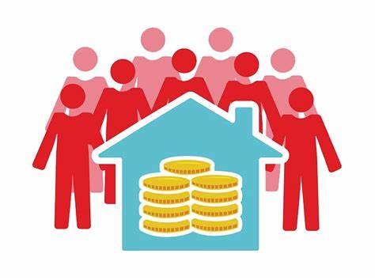

Redistribución de Bienes y Comunidad
La redistribución de bienes es un proceso mediante el cual los recursos se distribuyen nuevamente entre los miembros de una comunidad, a menudo con el objetivo de reducir desigualdades y fortalecer la cohesión social. Este proceso es fundamental en muchas sociedades, especialmente en aquellas con estructuras sociales más colectivistas. A continuación, exploramos la redistribución de bienes en diferentes contextos culturales y sus implicaciones para la comunidad.
Concepto de Redistribución de Bienes
La redistribución de bienes implica la recolección y posterior distribución de recursos dentro de una comunidad. Este proceso puede ser formal (a través de instituciones estatales o religiosas) o informal (a través de prácticas tradicionales y culturales).
Funciones de la Redistribución
Equidad y Justicia Social: Redistribuir recursos ayuda a reducir desigualdades económicas y sociales, promoviendo una mayor equidad dentro de la comunidad. Cohesión Social: La redistribución fortalece los lazos sociales al asegurar que todos los miembros de la comunidad tengan acceso a los recursos necesarios para su bienestar. Seguridad Económica: Proporciona una red de seguridad para los miembros más vulnerables de la sociedad, ayudando a mitigar los efectos de la pobreza y la inseguridad económica. Legitimidad y Autoridad: En muchas sociedades, los líderes que supervisan la redistribución de bienes ganan legitimidad y autoridad, lo que les permite mantener el orden y la estabilidad social.
Implicaciones para la Comunidad
1.Fortalecimiento de la Solidaridad: La redistribución de bienes crea un sentido de solidaridad y responsabilidad mutua entre los miembros de la comunidad, reforzando los lazos sociales y culturales.
2. Reducción de Conflictos: Al reducir las disparidades económicas, la redistribución de bienes puede disminuir las tensiones y conflictos sociales, promoviendo la armonía y la cooperación.
3.Sostenibilidad: Al asegurar que los recursos se distribuyan de manera más equitativa, la redistribución contribuye a la sostenibilidad económica y social a largo plazo, ayudando a prevenir la marginación y exclusión de ciertos grupos.
4.Empoderamiento: La redistribución de bienes puede empoderar a los individuos y comunidades marginadas, proporcionando los recursos necesarios para mejorar su calidad de vida y participar plenamente en la sociedad.
REPRESENTACION

Video
Bibliografía
- Polanyi, K. (1944). The Great Transformation: The political and economic origins of our time. Beacon Press.